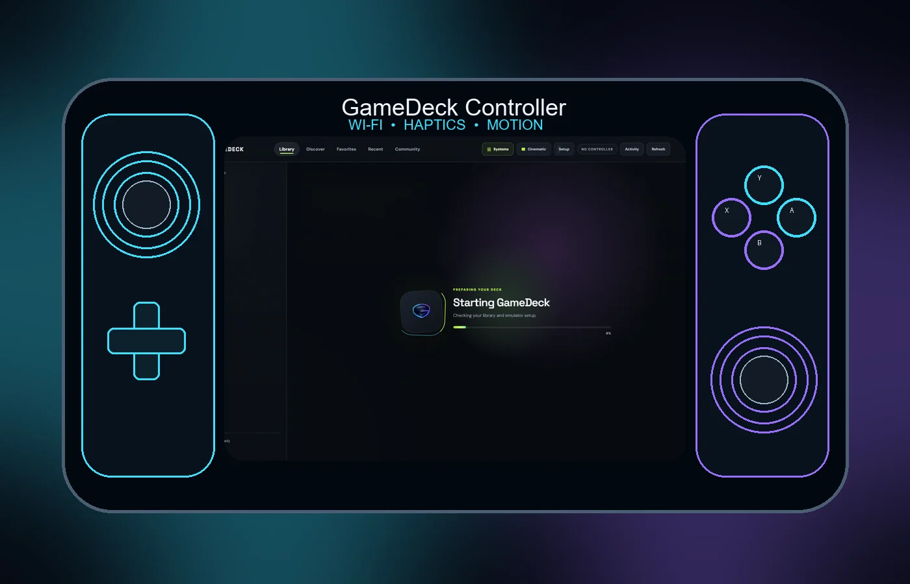
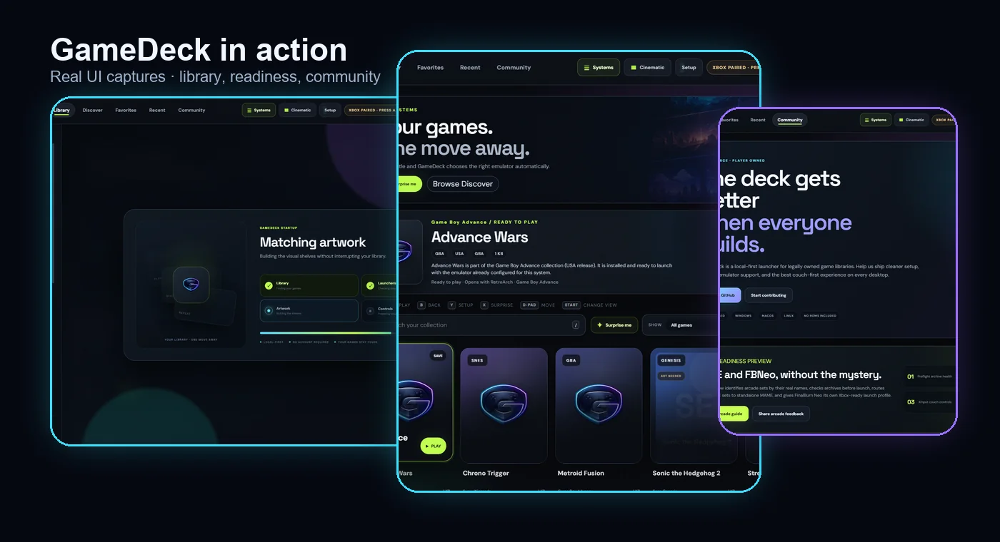

Your library, finally together.
Browse, search, favorite, resume, and launch from one calm, controller-friendly interface.
 GameDeck
GameDeck
OPEN SOURCE · LOCAL FIRST · BUILT TO PLAY
GameDeck brings the games you own into one polished, controller-first home — then lets your phone become the controller when you want it.

THE EXPERIENCE
GameDeck is designed around the moment you sit down to play: your library is clear, your controller is ready, and multiplayer is understandable before you launch.
Browse, search, favorite, resume, and launch from one calm, controller-friendly interface.
Open the Controller on the device already in your hand and play in portrait or landscape.
Meet the Controller →Couch play, remote play, or synchronized netplay — each mode stays clear and intentional.
Explore multiplayer →GAMEDECK CONTROLLER
Pair your phone with GameDeck and use it as a responsive gamepad, an optional gameplay screen, or both. No extra hardware. No separate ecosystem.

PLAYING ON GAMEDECKSEE GAMEDECK
No abstract dashboard. No setup maze. The product stays focused on your games and what you want to do next.
PLAY TOGETHER
GameDeck keeps each multiplayer experience distinct, so you know what kind of session you are starting before anyone joins.
Plug in another controller and play together on the same GameDeck.
Share the experience with a friend while the game stays on the host GameDeck.
Connect compatible setups for synchronized multiplayer sessions.
HOW IT FITS TOGETHER
Your library, launch flow, and community live with GameDeck.
Open Controller, pair once, and use the layout that feels right.
Locally, remotely, or with the community — without changing the experience.
GET GAMEDECK
Install the full GameDeck where you keep your library. The phone Controller stays separate and lightweight.
GameDeckChecking current builds…
GameDeck does not include commercial games, firmware, or keys. Bring the games you legally own.
THE COMMUNITY
Open Rooms and community chat help you discover compatible players without turning GameDeck into another social network you have to manage.
YOUR LIBRARY. YOUR CONTROLLER. YOUR DECK.